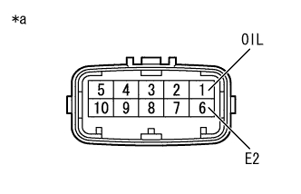
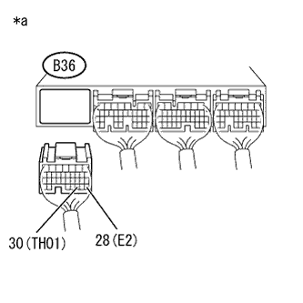

DTC P0712/38 Oil temperature sensor system (LOW) |
DTC P0713/38 Oil temperature sensor system (High) |
| DTC No. SAE/TCCS | DTC detection conditions
| Inspection site |
|---|---|---|
| P0712/38 |
|
|
| P0713/38 |
|
| Step 1 | Tascan data reading (at oil temperature 1) |
Connect SST (Tascan) to DLC3.
Ig ON.
Use SST (Tascan) to read [ECU Data Monitor]-[at hydraulic 1] according to the screen display.
| Item name | Inspection condition | Standard value |
|---|---|---|
| AT oil temperature 1 | Cold time IG ON | Equivalent to outside temperature |
| After stall test | 50 to 100 ° C |
| result | Destination |
|---|---|
| The value of the data monitor is out of the standard value | A |
| The value of the data monitor is within the standard value | B |
|
| ||||
| A | |
| Step 2 | Trans mission wire single inspection (oil temperature sensor) |
|  |
Cut the transmission wire connector B10.
Use SST (Toyota Electrical Tester) to measure resistance between terminals.
| Inspection terminal | Inspection condition | Reference value |
|---|---|---|
| 1 (OIL) --6 (E2) | 10 ° C | 5 to 8 kΩ |
| 25 ° C | 2.5 to 4.5 kΩ | |
| 110 ° C | 0.22 to 0.28 kΩ |
| Inspection terminal | Inspection condition | Reference value |
|---|---|---|
| 1 (OIL) -Body Earth | Always | 10kΩ or higher |
| *a | Connector non -connection status (Transmission wire) |
|
| ||||
| OK | |
| Step 3 | Wire harness and connector inspection (transmission wire -engine control computer) |
reference.|  |
Cut the connector B36 of the engine control computer.
Use SST (Toyota Electrical Tester) to measure resistance between terminals.
| Inspection terminal | Inspection condition | Reference value |
|---|---|---|
| B36-30 (THO1) --B36-28 (E2) | 10 ° C | 5 to 8 kΩ |
| 25 ° C | 2.5 to 4.5 kΩ | |
| 110 ° C | 0.22 to 0.28 kΩ |
| Inspection terminal | Inspection condition | Reference value |
|---|---|---|
| B36-30 (THO1) --Body Earth | Always | 10kΩ or more |
| B36-28 (E2) -Body Earth | Always | 10kΩ or more |
| *a | Connector non -connection status (Engine control computer) |
|
| ||||
| OK | ||
| ||